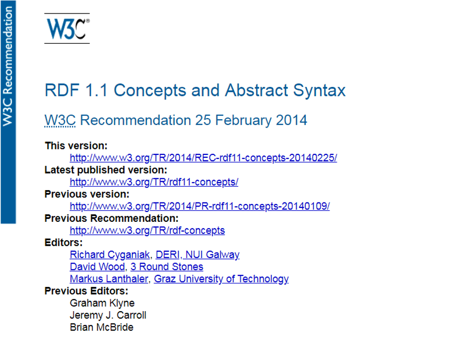
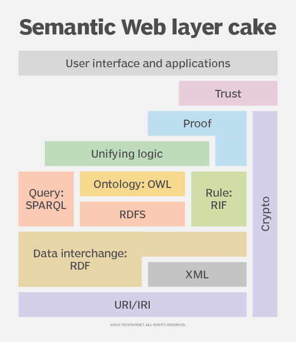
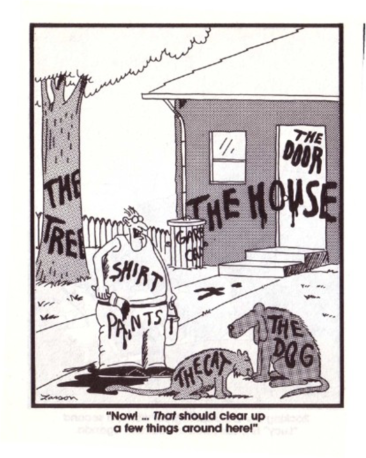

Le triplet : l'unité atomique de tout graphe de connaissances.
Pour partager et relier des données entre sources hétérogènes, les modèles classiques montrent vite leurs limites.

Source : w3.org/TR/rdf11-concepts
RDF n'est pas seul : il est la fondation sur laquelle reposent toutes les couches supérieures.

Un triplet est un fait élémentaire représentant une relation entre deux choses.
Un fait du monde réel, réduit à sa forme la plus simple.
Un triplet est un fait élémentaire représentant une relation entre deux choses.
La ressource dont on parle. Un noeud du graphe.
La relation ou propriété. L'arête étiquetée du graphe.
La valeur ou la ressource liée. Un autre noeud, ou une valeur concrète.
Dans la section 2.2, nous verrons comment représenter ces termes
(IRIs, littéraux, blank nodes).
En langage naturel :
En triplets (notation abstraite) :
| Sujet | Prédicat | Objet |
|---|---|---|
| rg2025 | type | GrandChelem |
| rg2025 | lieu | Paris |
| alcaraz | aGagné | rg2025 |
| alcaraz | nationalité | Espagne |
Les symboles "rg2025", "alcaraz", "Paris"… sont des identifiants abstraits. Leur représentation formelle (IRIs, littéraux) est l'objet de la section 2.2.
Deux sources indépendantes décrivent le même tournoi :
Source 1 (Wikidata)
| Sujet | Prédicat | Objet |
|---|---|---|
| alcaraz | aGagné | rg2025 |
| rg2025 | type | GrandChelem |
| rg2025 | lieu | Paris |
Source 2 (ATP Tour)
| Sujet | Prédicat | Objet |
|---|---|---|
| alcaraz | aGagné | rg2025 |
| rg2025 | points | 2000 |
alcaraz aGagné rg2025 est éliminé.Sources : statistiques Wikidata 2025 · UniProt RDF release 2026_02.
Comment nommer les choses : IRIs, Littéraux et Blank Nodes.

En représentation de connaissances, il est nécessaire de nommer les entités et les relations.
Exemples d'entités : personnes, lieux, concepts, événements, organisations, protéines, gènes, maladies…
Exemples de relations : aGagné, estLocaliséÀ, estDeNationalité, estParentDe, estAuteurDe…
RDF définit trois et seulement trois types de termes. Chaque type peut occuper certaines positions dans un triplet.
| Type | Sujet | Prédicat | Objet |
|---|---|---|---|
| IRI : identifiant universel | ✓ | ✓ | ✓ |
| Littéral : valeur concrète | ✗ | ✗ | ✓ |
| Blank Node : ressource anonyme | ✓ | ✗ | ✓ |
Les IRIs et blank nodes représentent des ressources (personnes, lieux, concepts, etc).
Les littéraux représentent des valeurs brutes (textes, nombres, dates).
Internationalized Resource Identifiers :
des noms sans ambiguïté à l'échelle mondiale.
wikidata.org et universite-paris-saclay.fr sont des espaces distincts : aucune collision n'est possible par construction.<https://universite-paris-saclay.fr/enseignants/joeraad><https://www.wikidata.org/wiki/Q191067>
<http://www.wikidata.org/entity/Q191067><http://example.org/%C5%9Awi%C4%85tek>
<http://example.org/Świątek>
Toute URL est un IRI, mais l'inverse n'est pas vrai. Ce qui compte pour RDF : l'unicité mondiale, pas l'accessibilité.
Un IRI est un identifiant global, pas un nom en langage naturel. Sa lisibilité est un choix de l'éditeur, non une garantie.
Roland-Garros
<http://dbpedia.org/resource/Roland-Garros>
<http://www.wikidata.org/entity/Q43605>
Carlos Alcaraz
<http://dbpedia.org/resource/Carlos_Alcaraz>
<http://www.wikidata.org/entity/Q85518537>
Les IRIs complets sont verbeux. Les préfixes permettent de les abréger dans les fichiers et les requêtes.
Triplet sans préfixe :
<http://example.org/alcaraz> <http://example.org/aGagné> <http://example.org/rg2025> .Le même triplet avec préfixe :
@prefix ex: <http://example.org/> .
ex:alcaraz ex:aGagné ex:rg2025 .Le préfixe est un alias : ex:rg2025 s'expande en <http://example.org/rg2025>.
La sémantique est identique.
Ces préfixes sont réutilisés dans presque tous les fichiers RDF.
Les savoir économise du temps.
@prefix rdf: <http://www.w3.org/1999/02/22-rdf-syntax-ns#> .
@prefix xsd: <http://www.w3.org/2001/XMLSchema#> .
@prefix rdfs: <http://www.w3.org/2000/01/rdf-schema#> .
@prefix owl: <http://www.w3.org/2002/07/owl#> .
rdf:type, rdf:Property, rdf:nil…xsd:integer, xsd:date, xsd:boolean…rdfs:subClassOf, rdfs:domain… (chapitre 3)owl:sameAs, owl:TransitiveProperty… (chapitre 3)rdf:type : le prédicat universelDéclare qu'une ressource est une instance d'une classe. C'est de loin le prédicat le plus utilisé dans tout graphe RDF.
@prefix ex: <http://example.org/> .
@prefix rdf: <http://www.w3.org/1999/02/22-rdf-syntax-ns#> .
ex:alcaraz rdf:type ex:Person .
ex:rg2025 rdf:type ex:GrandChelem .
ex:court_chatrier rdf:type ex:Place .ex:rg2025 rdf:type ex:GrandChelem .ex:rg2025 rdf:type ex:ÉvenementEnFrance .
rdf: : termes essentielsex:vainqueur rdf:type rdf:Property .rdf:subject, rdf:predicate, rdf:object."Roland-Garros"@fr a pour datatype rdf:langString, détaillé en section 2.2.2.
rdf:first / rdf:rest / rdf:nilRDF représente une séquence ordonnée par une chaîne de nœuds intermédiaires. Chaque maillon porte l'élément courant (rdf:first) et pointe vers le suivant (rdf:rest). La chaîne se termine par rdf:nil.
@prefix ex: <http://example.org/> .
@prefix rdf: <http://www.w3.org/1999/02/22-rdf-syntax-ns#> .
ex:rg2025 ex:classement _:n1 . # entrée dans la liste
_:n1 rdf:first ex:alcaraz . # 1er élément
_:n1 rdf:rest _:n2 . # → maillon suivant
_:n2 rdf:first ex:zverev . # 2ème élément
_:n2 rdf:rest _:n3 .
_:n3 rdf:first ex:djokovic . # 3ème élément
_:n3 rdf:rest rdf:nil . # fin de listeLes valeurs concrètes : textes, nombres, dates, booléens.
"Alcaraz" est une chaîne de caractères (donnée brute) ; ex:alcaraz est un IRI qui identifie le joueur. Ce ne sont pas la même chose.ex:alcaraz ex:nom "Alcaraz" .
"Carlos Alcaraz""2025-06-08"^^xsd:date"terre-battue"@fr
En RDF 1.1, un littéral sans type explicite est un xsd:string. Les deux formes ci-dessous sont rigoureusement identiques :
Forme abrégée
"Carlos Alcaraz"
Forme complète équivalente
"Carlos Alcaraz"^^xsd:string
"texte" ou 'texte' : les deux sont valides.
Multi-lignes : """texte sur plusieurs lignes""" : triple guillemets.
Syntaxe : "texte"@code-langue. Permet d'associer plusieurs traductions à la même ressource.
ex:surface1 ex:nom "terre battue"@fr .
ex:surface1 ex:nom "clay"@en .
ex:surface1 ex:nom "tierra batida"@es .
ex:surface1 ex:nom "terra battuta"@it . Les chaînes sans étiquette de langue sont de type xsd:string. Celles avec étiquette (@fr) sont de type rdf:langString : deux types distincts.
ex:alcaraz ex:classement "1"^^xsd:integer .
ex:alcaraz ex:taille "1.86"^^xsd:decimal .
ex:rg2025 ex:dotation "2.5e6"^^xsd:double .
ex:court ex:superficie "2804.5"^^xsd:float .
Préférer xsd:decimal à xsd:double quand la précision exacte compte.
ex:rg2025 ex:startDate "2025-05-26"^^xsd:date .
ex:finale ex:debut "2025-06-08T14:00:00+02:00"^^xsd:dateTime .
ex:finale ex:heure "14:00:00"^^xsd:time .
ex:rg2025 ex:annee "2025"^^xsd:gYear .
ex:rg2025 ex:duree "P14D"^^xsd:duration .
ex:alcaraz ex:estTetesDeSerie "true"^^xsd:boolean .
xsd:integer contraint à ≥ 0.ex:alcaraz ex:nbTitresGrandChelem "3"^^xsd:nonNegativeInteger .
ex:rg2025 ex:siteWeb "https://www.rolandgarros.com"^^xsd:anyURI .
ex:logo ex:hash "a3f2b1c4"^^xsd:hexBinary .
Liste complète : www.w3.org/TR/xmlschema11-2/#built-in-datatypes
Sans ^^xsd:integer, RDF traite la valeur comme du texte. Le tri et la comparaison numériques deviennent impossibles.
ex:alcaraz ex:classement "1" .
Texte. "10" < "2" en ordre lexicographique — un classement ATP trié ainsi serait erroné.
ex:alcaraz ex:classement "1"^^xsd:integer .
Entier reconnu. Comparaison, tri et validation numériques fonctionnent correctement.
Sans ^^xsd:date, une date n'est qu'une chaîne. L'ordre lexicographique diffère de l'ordre chronologique.
ex:rg2025 ex:startDate "2025-05-25" .
Texte. "2025-05-25" < "2025-1-01" en ordre lexicographique — résultat chronologiquement faux.
ex:rg2025 ex:startDate "2025-05-25"^^xsd:date .
Date reconnue. Calculs d'intervalles et filtres FILTER(?d > …) fonctionnent en SPARQL.
Règle générale : un littéral sans ^^type est toujours traité comme xsd:string. Toujours typer les nombres et les dates.
Ressources anonymes : représenter l'existence sans nommer.
_:label) n'est valide qu'à l'intérieur du fichier ou du graphe nommé qui le contient.
ex:alcaraz ex:aEuEntraineur _:x .
_:x ex:aRemporte ex:roland_garros .
_:x ex:nationalite ex:Espagne .Un blank node est référencé par un identifiant local préfixé par _:. Cet identifiant n'a de sens qu'à l'intérieur du fichier.
@prefix ex: <http://example.org/> .
@prefix xsd: <http://www.w3.org/2001/XMLSchema#> .
ex:court_chatrier ex:coordonnees _:coord1 .
_:coord1 ex:latitude "48.8470"^^xsd:decimal .
_:coord1 ex:longitude "2.2493"^^xsd:decimal .
_:coord1 ex:datum "WGS84" .La notation compacte [ ] pour les blank nodes anonymes sera présentée avec la syntaxe Turtle en section 2.3.
Nœud structurel intermédiaire sans identité propre dans le domaine : coordonnées GPS, intervalle temporel…
Exemple (section 2.2.1) : les maillons _:n1, _:n2… d'une liste RDF ne représentent aucune entité du domaine ; ils structurent la chaîne rdf:first / rdf:rest.
Entité du domaine qui mérite un IRI : un joueur, un tournoi, un court. Un blank node ne peut pas être référencé depuis un autre graphe ni recherché directement par SPARQL.
Comment écrire et partager un graphe RDF : les formats d'échange.
Les mêmes triplets RDF peuvent s'écrire dans plusieurs formats. Le choix dépend du contexte, pas des données.
.nt.rdf.jsonld.ttlLes slides suivantes représentent les mêmes deux triplets dans chaque format :
ex:rg2025 ex:vainqueur ex:alcaraz · ex:rg2025 ex:startDate "2025-05-25"^^xsd:date
Format minimaliste : pas de préfixes, pas de raccourcis. Chaque triplet tient sur une ligne avec IRIs entiers entre <>.
<http://example.org/rg2025> <http://example.org/vainqueur> <http://example.org/alcaraz> .
<http://example.org/rg2025> <http://example.org/startDate> "2025-05-25"^^<http://www.w3.org/2001/XMLSchema#date> .Le premier format officiel du W3C (1999). Très verbeux mais encore omniprésent dans l'écosystème OWL.
<rdf:RDF xmlns:rdf="http://www.w3.org/1999/02/22-rdf-syntax-ns#"
xmlns:ex="http://example.org/"
xmlns:xsd="http://www.w3.org/2001/XMLSchema#">
<rdf:Description rdf:about="http://example.org/rg2025">
<ex:vainqueur rdf:resource="http://example.org/alcaraz"/>
<ex:startDate rdf:datatype="http://www.w3.org/2001/XMLSchema#date">2025-05-25</ex:startDate>
</rdf:Description>
</rdf:RDF>.rdf ou .owl.
Du JSON enrichi avec un @context qui déclare les mappings vers les IRIs. Lisible par tout outil JSON sans bibliothèque RDF.
{
"@context": {
"ex": "http://example.org/",
"xsd": "http://www.w3.org/2001/XMLSchema#"
},
"@id": "ex:rg2025",
"ex:vainqueur": { "@id": "ex:alcaraz" },
"ex:startDate": { "@value": "2025-05-25", "@type": "xsd:date" }
}schema.org pour le SEO, Google Knowledge Panel. Extension .jsonld.
Des attributs ajoutés à du HTML existant, sans fichier séparé. La page reste lisible par le navigateur et par un analyseur RDF.
<div vocab="http://example.org/"
resource="http://example.org/rg2025">
<!-- ex:rg2025 ex:vainqueur ex:alcaraz -->
<a property="vainqueur"
href="http://example.org/alcaraz">Carlos Alcaraz</a>
<!-- ex:rg2025 ex:startDate "2025-05-25"^^xsd:date -->
<span property="startDate"
content="2025-05-25"
datatype="http://www.w3.org/2001/XMLSchema#date">25 mai 2025</span>
</div>→ content porte la valeur machine-readable ; le texte affiché ("25 mai 2025") peut différer. href indique un objet IRI.
schema.org et les rich snippets Google.
Syntaxe compacte et lisible par les humains. Réutilisée mot pour mot dans SPARQL.
W3C Recommendation · www.w3.org/TR/turtle/
Un fichier Turtle (extension .ttl) se compose de deux parties :
les déclarations de préfixes, puis les triplets.
# 1. Déclarations de préfixes (en tête de fichier)
@prefix ex: <http://example.org/> .
@prefix xsd: <http://www.w3.org/2001/XMLSchema#> .
# 2. Triplets
ex:rg2025 ex:vainqueur ex:alcaraz .
ex:rg2025 ex:startDate "2025-05-25"^^xsd:date .. est le terminateur de chaque bloc de triplets.Quand plusieurs prédicats partagent le même sujet, on les sépare par un point-virgule.
Sans raccourci : sujet répété à chaque ligne :
ex:alcaraz a ex:Person .
ex:alcaraz ex:name "Carlos Alcaraz" .
ex:alcaraz ex:nationalite ex:espagne .
ex:alcaraz ex:rang "1"^^xsd:integer .Avec ; : sujet déclaré une seule fois :
ex:alcaraz
a ex:Person ;
ex:name "Carlos Alcaraz" ;
ex:nationalite ex:espagne ;
ex:rang "1"^^xsd:integer .; = même sujet, nouveau prédicat. Le . final clôt le bloc entier.
Quand le même sujet et le même prédicat ont plusieurs objets, on les sépare par une virgule.
Sans raccourci : sujet et prédicat répétés :
ex:rg2025 ex:surface "terre battue"@fr .
ex:rg2025 ex:surface "clay"@en .
ex:rg2025 ex:surface "arcilla"@es .
ex:rg2025 ex:surface "terra battuta"@it .Avec , : sujet et prédicat déclarés une seule fois :
ex:rg2025 ex:surface "terre battue"@fr ,
"clay"@en ,
"arcilla"@es ,
"terra battuta"@it ., = même sujet, même prédicat, nouvel objet.
Les raccourcis ; et , peuvent se combiner.
a pour rdf:typerdf:type est le prédicat le plus utilisé en RDF.
Turtle propose le mot-clé a.
Forme explicite avec rdf:type :
ex:rg2025 rdf:type ex:SportsEvent .
ex:rg2025 rdf:type ex:GrandChelem .Avec a (+ virgule pour plusieurs classes) :
ex:rg2025 a ex:SportsEvent , ex:GrandChelem .a est spécifique à Turtle ; il s'expande en: <http://www.w3.org/1999/02/22-rdf-syntax-ns#type>.
Turtle autorise des valeurs non-quotées pour les types courants.
Ce sucre syntaxique n'existe pas en N-Triples ni RDF/XML.
Forme explicite (valide dans tous les formats) :
ex:alcaraz ex:rang "1"^^xsd:integer .
ex:alcaraz ex:taille "1.86"^^xsd:decimal .
ex:alcaraz ex:tetesSerie "true"^^xsd:boolean .Raccourci Turtle :
ex:alcaraz
ex:rang 1 ;
ex:taille 1.86 ;
ex:tetesSerie true .Entier sans point → xsd:integer · avec point → xsd:decimal · scientifique → xsd:double · true/false → xsd:boolean.
Un nœud intermédiaire sans identité propre peut être déclaré en ligne avec [ ], sans lui donner un identifiant _:label.
Sans raccourci : blank node nommé explicitement :
ex:court_chatrier ex:coordonnees _:c .
_:c ex:latitude "48.8470"^^xsd:decimal .
_:c ex:longitude "2.2493"^^xsd:decimal .
_:c ex:datum "WGS84" .Avec [ ] : blank node anonyme en ligne :
ex:court_chatrier ex:coordonnees [
ex:latitude "48.8470"^^xsd:decimal ;
ex:longitude "2.2493"^^xsd:decimal ;
ex:datum "WGS84"
] .[ ] = blank node sans IRI. Les triplets intérieurs s'écrivent avec ; comme pour tout sujet Turtle.
Une liste ordonnée s'écrit avec ( ). Turtle génère automatiquement la chaîne rdf:first / rdf:rest / rdf:nil vue en section 2.2.1.
Sans raccourci : chaîne de blank nodes explicite :
ex:rg2025 ex:classement _:n1 .
_:n1 rdf:first ex:alcaraz . _:n1 rdf:rest _:n2 .
_:n2 rdf:first ex:zverev . _:n2 rdf:rest _:n3 .
_:n3 rdf:first ex:djokovic . _:n3 rdf:rest rdf:nil .Avec ( ) : liste en une ligne :
ex:rg2025 ex:classement ( ex:alcaraz ex:zverev ex:djokovic ) .( ) = sucre syntaxique Turtle.
Les deux formes produisent exactement le même graphe RDF.
Préfixes · ; · , · a · raccourcis numériques · [ ] : tous les raccourcis Turtle réunis :
@prefix ex: <http://example.org/> .
@prefix xsd: <http://www.w3.org/2001/XMLSchema#> .
ex:alcaraz a ex:Person ;
ex:name "Carlos Alcaraz" ;
ex:nationalite ex:espagne ;
ex:classement 1 .
ex:rg2025 a ex:GrandChelem ;
ex:surface "terre battue"@fr , "clay"@en , "arcilla"@es ;
ex:startDate "2025-05-25"^^xsd:date ;
ex:vainqueur ex:alcaraz ;
ex:location [ ex:latitude 48.8470 ;
ex:longitude 2.2493 ] .Traduire un texte en triplets RDF, phrase par phrase.
3 phrases, mais plusieurs faits à représenter.
ex:tour_eiffel a ex:Monument .
ex:tour_eiffel ex:lieu ex:champ_de_mars ."est un monument" → rdf:type (raccourci a).
Le Champ-de-Mars est un lieu identifiable (entité) → IRI, pas un littéral.
ex:tour_eiffel ex:architecte ex:gustave_eiffel .
ex:tour_eiffel ex:dateAchevement "1889-03-31"^^xsd:date .Gustave Eiffel est une personne identifiable → IRI.
La date est une valeur brute → littéral typé xsd:date.
ex:tour_eiffel ex:hauteur 300 .
ex:tour_eiffel ex:construitPour ex:expo_universelle_1889 .300 mètres est une mesure → littéral numérique (en raccourci Turtle).
L'exposition est un événement identifiable → IRI.
Les 6 triplets, regroupés avec le raccourci ; vu en 2.3.
@prefix ex: <http://example.org/> .
@prefix xsd: <http://www.w3.org/2001/XMLSchema#> .
ex:tour_eiffel
a ex:Monument ;
ex:lieu ex:champ_de_mars ;
ex:architecte ex:gustave_eiffel ;
ex:dateAchevement "1889-03-31"^^xsd:date ;
ex:hauteur 300 ;
ex:construitPour ex:expo_universelle_1889 .→ Un seul rdf:type (a), quatre IRIs en position objet, deux littéraux.
Optionnel, mais recommandé : décrire aussi les entités référencées, pas seulement ex:tour_eiffel.
ex:champ_de_mars ex:lieu ex:paris .
ex:champ_de_mars a ex:Place .
ex:paris a ex:Ville .
ex:gustave_eiffel a ex:Personne .
ex:expo_universelle_1889 a ex:Exposition .ex:paris, ex:gustave_eiffel et ex:expo_universelle_1889 restent des IRIs muets. Un graphe où toute ressource référencée porte au moins un rdf:type se laisse interroger, valider et faire raisonner bien plus facilement.
Ajouter aussi un nom lisible, en français et en anglais, à chaque entité du graphe.
ex:tour_eiffel ex:nom "Tour Eiffel"@fr, "Eiffel Tower"@en .
ex:champ_de_mars ex:nom "Champ-de-Mars"@fr, "Champ de Mars"@en .
ex:paris ex:nom "Paris"@fr, "Paris"@en .
ex:gustave_eiffel ex:nom "Gustave Eiffel"@fr, "Gustave Eiffel"@en .
ex:expo_universelle_1889 ex:nom "Exposition universelle de 1889"@fr,
"1889 World's Fair"@en .rdf:type dit ce qu'est chaque ressource ; ex:nom dit comment l'afficher et le chercher. Les deux sont indépendants, et les deux rendent le graphe plus utile.
Exprimer la provenance, la temporalité et la confiance au-delà du triplet de base.
Un triplet RDF de base dit qu'un fait est vrai. Il ne dit pas qui l'affirme, quand, ni à quel point on peut lui faire confiance.
ex:Obama ex:birthPlace ex:Kenya. Les archives officielles disent ex:Honolulu. Sans annotation de source, les deux coexistent dans un graphe fusionné sans qu'on puisse les distinguer.
ex:france ex:president ex:Hollande était vrai de 2012 à 2017, faux après. Sans date, un raisonneur peut utiliser un fait périmé comme s'il était encore valide aujourd'hui.
ex:patient42 ex:diagnostic ex:pneumonie avec 73 % de confiance. Un radiologue l'affirme avec 99 %. Un raisonneur qui traite les deux de façon identique peut prendre une décision incorrecte.
RDF offre trois façons d'annoter un triplet avec ce type de métadonnées (provenance, date, confiance), du plus verbeux au plus concis.
Représenter le triplet lui-même comme une ressource via rdf:Statement, rdf:subject, rdf:predicate, rdf:object.
Standard depuis RDF 1.0. Verbeux : 6 triplets supplémentaires par annotation.
Regrouper des triplets sous un IRI de graphe. Chaque graphe est une unité de provenance. Formats : TriG, N-Quads.
→ Idéal pour attribuer des ensembles de faits à une source.
Annoter un triplet individuel en le traitant comme sujet d'autres triplets, sans créer de blank nodes intermédiaires.
→ Idéal pour annoter un fait précis avec confiance, date, source.
Sept victoires au Tour de France, retirées puis contestées :
un cas réel de faits qui se contredisent selon la source.
Trois assertions sur le même sujet, issues de sources réelles
mais incompatibles sans contexte.
Armstrong est couronné pour la 7ème fois.
L'UCI homologue officiellement 7 titres au Tour de France.
Suite à l'enquête USADA sur le dopage systématique, l'UCI retire l'intégralité des titres.
Palmarès officiel : 0 titre.
Des médias et observateurs contestent la décision.
Armstrong a physiquement remporté ces courses : 7 victoires sportives.
Si l'on tente de représenter ces trois assertions en RDF de base :
Turtle@prefix ex: <http://example.org/> .
ex:armstrong ex:titresTDF 7 .
ex:armstrong ex:titresTDF 0 .7 et 0 coexistent sans qu'un raisonneur sache lequel privilégier.
ex:titresTDF 7 (UCI 2005 et source non officielle) sont identiques en RDF : fusionnées en un seul triplet, indiscernables.
Il faut un mécanisme pour contextualiser chaque assertion individuellement.
Transformer un triplet en ressource pour l'annoter :
la solution historique de RDF 1.0.
RDF fournit quatre propriétés pour parler d'un triplet en le représentant comme une instance de rdf:Statement.
rdf:Statement.
Chaque assertion produit un rdf:Statement distinct — même si le sujet et le prédicat sont identiques.
@prefix rdf: <http://www.w3.org/1999/02/22-rdf-syntax-ns#> .
@prefix ex: <http://example.org/> .
@prefix xsd: <http://www.w3.org/2001/XMLSchema#> .
# UCI 2005 — 7 titres homologués
_:s1 a rdf:Statement ;
rdf:subject ex:armstrong ;
rdf:predicate ex:titresTDF ;
rdf:object 7 ;
ex:source ex:source-uci ;
ex:date "2005-07-24"^^xsd:date .
# UCI 2012 — 0 titre (retrait USADA)
_:s2 a rdf:Statement ;
rdf:subject ex:armstrong ;
rdf:predicate ex:titresTDF ;
rdf:object 0 ;
ex:source ex:source-uci ;
ex:date "2012-10-22"^^xsd:date .→ Même source (ex:source-uci), même sujet, même prédicat — mais deux dates et deux valeurs : la réification les distingue.
La troisième assertion vient d'une source externe qui conteste le retrait officiel.
@prefix rdf: <http://www.w3.org/1999/02/22-rdf-syntax-ns#> .
@prefix ex: <http://example.org/> .
# Source non officielle — conteste le retrait
_:s3 a rdf:Statement ;
rdf:subject ex:armstrong ;
rdf:predicate ex:titresTDF ;
rdf:object 7 ;
ex:source ex:source-velonews ;
ex:statut ex:nonOfficiel .→ 3 assertions = 18 triplets de réification au total. Verbeux mais standard RDF 1.0 : aucune extension de syntaxe requise.
Associer un contexte de provenance à des ensembles de triplets.
Un triplet RDF peut être associé à un graphe nommé (un IRI). On parle alors de quadruplet (ou quad).
Même fait, trois sources — chacune dans son graphe nommé
| Sujet | Prédicat | Objet | Graphe |
|---|---|---|---|
| ex:armstrong | ex:titresTDF | 7 | ex:g-uci-2005 |
| ex:armstrong | ex:titresTDF | 0 | ex:g-uci-2012 |
| ex:armstrong | ex:titresTDF | 7 | ex:g-unofficial |
Les datasets RDF (graphes nommés) se sérialisent dans deux formats, chacun l'extension naturelle d'un format de triplets.
Ajoute la syntaxe nomGraphe { … } à Turtle. Lisible, compact, raccourcis Turtle disponibles.
Extension fichier : .trig
Ajoute un 4ème élément (nom du graphe) à chaque ligne. Un quad par ligne, IRIs complets, idéal pour le streaming.
Extension fichier : .nq
Dans ce cours, nous utilisons TriG
(même syntaxe que Turtle).
Les métadonnées (source, date) sont attachées au graphe nommé lui-même, dans le graphe par défaut.
TriG@prefix ex: <http://example.org/> .
@prefix xsd: <http://www.w3.org/2001/XMLSchema#> .
# Métadonnées (graphe par défaut)
ex:g-uci-2005 ex:source ex:source-uci ; ex:date "2005-07-24"^^xsd:date .
ex:g-uci-2012 ex:source ex:source-uci ; ex:date "2012-10-22"^^xsd:date .
ex:g-unofficial ex:source ex:source-velonews ; ex:statut ex:nonOfficiel .
# Contenu de chaque graphe nommé
ex:g-uci-2005 { ex:armstrong ex:titresTDF 7 . }
ex:g-uci-2012 { ex:armstrong ex:titresTDF 0 . }
ex:g-unofficial { ex:armstrong ex:titresTDF 7 . }→ Le triplet ex:titresTDF 7 apparaît dans deux graphes distincts : l'IRI du graphe et ses métadonnées permettent de différencier UCI 2005 de la source non officielle.
Annoter les triplets eux-mêmes : une syntaxe compacte
(en cours de standardisation dans RDF 1.2)
RDF-star permet d'annoter un triplet en l'utilisant lui-même comme sujet ou objet d'autres triplets.
<< … >> et peut apparaître en position de sujet ou d'objet dans un autre triplet.
<< S P O >> n'affirme pas le triplet S P O. Pour qu'il soit un fait du graphe, il doit être écrit séparément : S P O .
# 1. Assertion du fait (triplet ordinaire)
ex:obama ex:paysDeNaissance ex:usa .
# 2. Annotation du triplet de la source Fox News (RDF-star)
<< ex:obama ex:paysDeNaissance ex:kenya >>
ex:source ex:source-foxnews ;
ex:date "2011-04-27"^^xsd:date .→ L'annotation et l'assertion sont deux triplets distincts. Sans la ligne 1, le fait n'existe pas dans le graphe.
Les trois assertions coexistent dans le même graphe.
Chaque << … >> identifie précisément l'assertion annotée.
@prefix ex: <http://example.org/> .
@prefix xsd: <http://www.w3.org/2001/XMLSchema#> .
# UCI 2005 — 7 titres homologués
<< ex:armstrong ex:titresTDF 7 >>
ex:source ex:source-uci ; ex:date "2005-07-24"^^xsd:date .
# UCI 2012 — 0 titre (retrait USADA)
<< ex:armstrong ex:titresTDF 0 >>
ex:source ex:source-uci ; ex:date "2012-10-22"^^xsd:date .
# Source non officielle — 7 titres contestés
<< ex:armstrong ex:titresTDF 7 >>
ex:source ex:source-velonews ; ex:statut ex:nonOfficiel .→ 3 assertions = 9 triplets au total. Aucun blank node intermédiaire — syntaxe plus compacte que la réification.
Les trois approches ont la même expressivité. Le choix dépend de la granularité souhaitée et de la compatibilité visée.
| Réification | Graphes nommés | RDF-star | |
|---|---|---|---|
| Triplets / assertion cas Armstrong (3 assertions) |
18 | 9–12 | 9 |
| Granularité | Triplet individuel | Ensemble de triplets | Triplet individuel |
| Standard | RDF 1.0 | RDF 1.1 | RDF 1.2 (en cours) |
| Formats | Turtle, N-Triples… | TriG, N-Quads | Turtle★ |
| Cas idéal | Compatibilité maximale | Provenance par lot | Annotation précise |
Pour notre scénario : RDF-star est le plus concis ; Graphes nommés est le plus interopérable.
Étendre le graphe de la Tour Eiffel pour capturer une évolution dans le temps.
ex:tour_eiffel ex:hauteur 300. Ce n'est pas une contradiction entre deux sources : les deux hauteurs sont vraies, chacune à sa date. Il faut dater chaque assertion individuellement, avec RDF-star.
Deux assertions à écrire, chacune avec sa date de validité :
ex:tour_eiffel ex:hauteur 300 : valable depuis le "1889-03-31"^^xsd:date
ex:tour_eiffel ex:hauteur 330 : valable depuis le "2022-01-01"^^xsd:date
Rappel : << S P O >> désigne le triplet lui-même, asserté séparément (S P O .) pour exister dans le graphe.
@prefix ex: <http://example.org/> .
@prefix xsd: <http://www.w3.org/2001/XMLSchema#> .
ex:tour_eiffel ex:hauteur 300 .
<< ex:tour_eiffel ex:hauteur 300 >>
ex:depuis "1889-03-31"^^xsd:date .
ex:tour_eiffel ex:hauteur 330 .
<< ex:tour_eiffel ex:hauteur 330 >>
ex:depuis "2022-01-01"^^xsd:date .→ Les deux assertions coexistent sans contradiction : chacune est individuellement datée, sans blank node ni graphe nommé intermédiaire.
Toute connaissance est un triplet (Sujet, Prédicat, Objet). Le sujet et le prédicat sont toujours des IRIs ; l'objet peut être un IRI ou un littéral.
Les IRIs identifient les ressources de façon globale et unique sur le Web. Ils s'abrègent avec @prefix en Turtle. Un IRI identifie une ressource, pas un document.
Les littéraux sont toujours typés (^^xsd:integer, ^^xsd:date…) ou étiquetés par langue (@fr, @en). Sans type explicite : xsd:string.
Les blank nodes (_:label ou [ ] en Turtle) sont des ressources anonymes sans IRI global : utiles pour les structures intermédiaires, non référençables de l'extérieur.
RDF peut être sérialisé dans plusieurs formats (N-Triples, RDF/XML, JSON-LD, RDFa…), chacun adapté à un usage différent. Dans ce cours, nous utilisons Turtle — lisible par les humains et réutilisé mot pour mot par le langage de requête SPARQL.
Pour contextualiser les triplets (provenance, temporalité, confiance) : les graphes nommés attribuent un ensemble de faits à une source, et RDF-star annote un triplet individuel directement.
RDF dit quels faits existent. Il ne dit pas encore ce qu'on peut en déduire. Le chapitre suivant introduit RDFS et OWL : les langages qui permettent aux machines de faire des inférences automatiques.